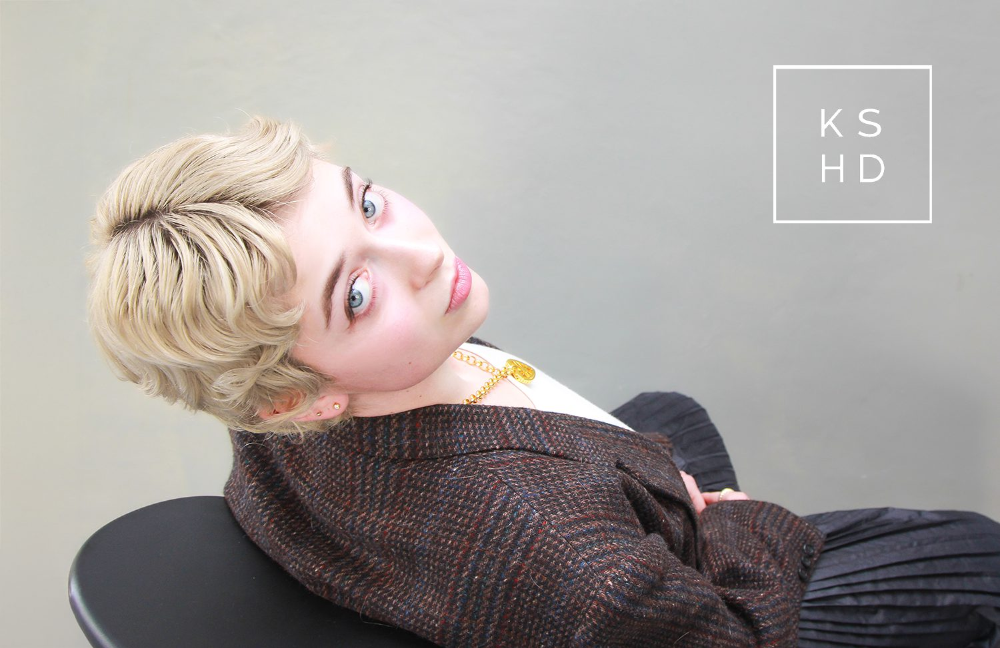

A Surry Hills studio built around one idea: cut with intent.「意図を持って、切る。」サリーヒルズのヘアスタジオ。
Precision cuts for every age.年齢を問わず、精度の高いカット。
From subtle to full transformation.さりげない変化から、大胆なイメチェンまで。
Texture and length, engineered.質感も長さも、思い通りに。
Same address, a second specialty.同じ住所で、もうひとつの専門技術。
Address住所574 Crown Street, Surry Hills NSW
Hair bookingsヘア予約0478 115 151
Beauty & massageビューティー＆マッサージ0466 546 179